Making authentication fast & seamless
Helping people sign in, save, and autofill securely with less friction, everywhere they work and browse. Two efforts that re-architected how 1Password captures and fills credentials across passwords, passkeys, and SSO.
Auto Save
Testing the bet before building
Inbound user feedback had already confirmed the core autosaving flow needed to change. The open question was social sign in, a company priority added onto the project, so we surveyed users to test demand. Interest was strong.
- Users expected support across multiple providers, not just one
- They wanted it to feel seamless, as easy as using a password
Making credential saving feel obvious
One save flow for every sign in method. It captures the credential only after auth succeeds, then clearly confirms it worked.
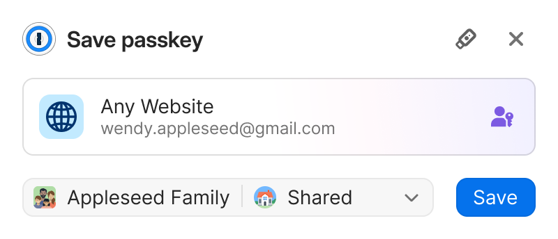
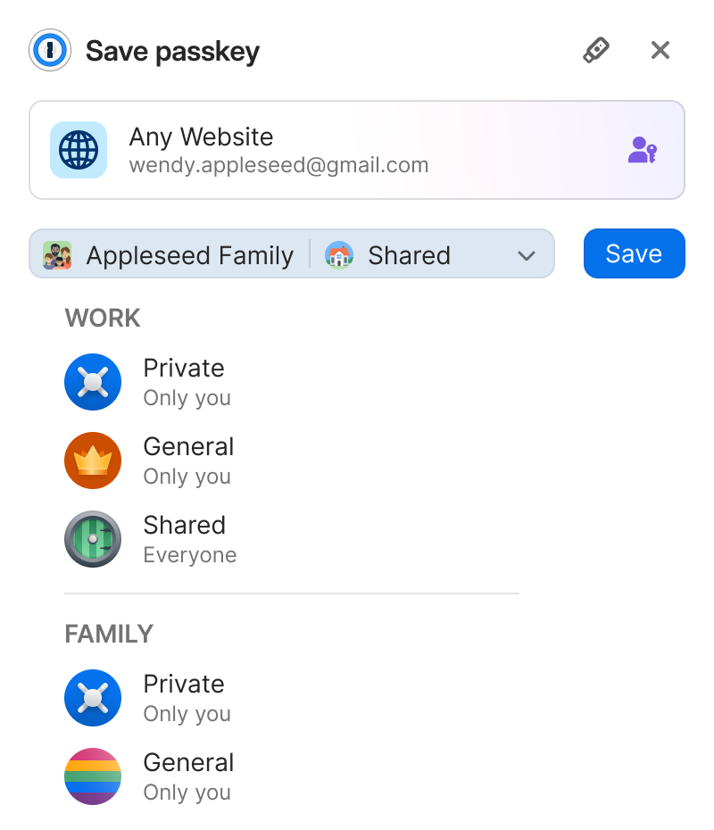
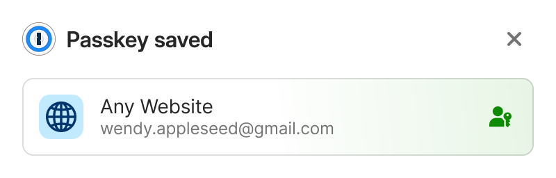
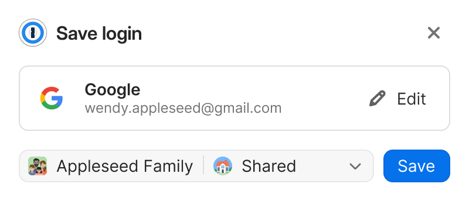
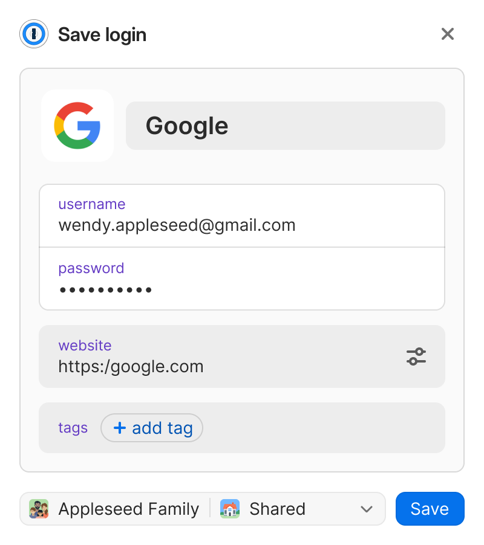
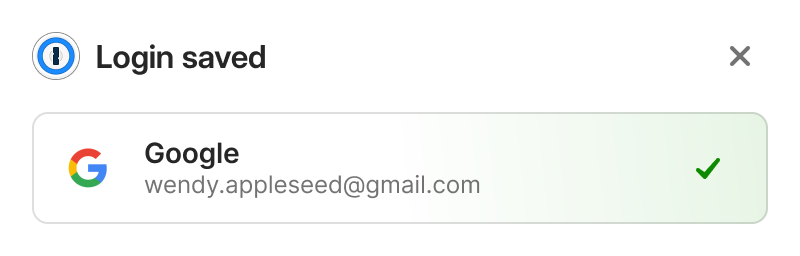
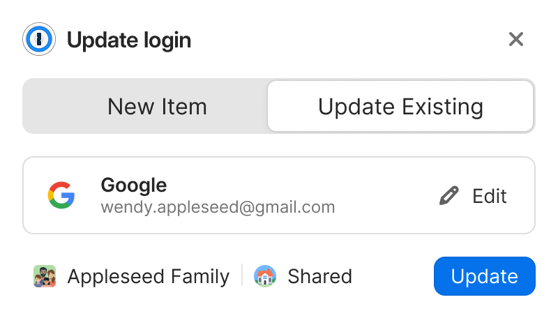
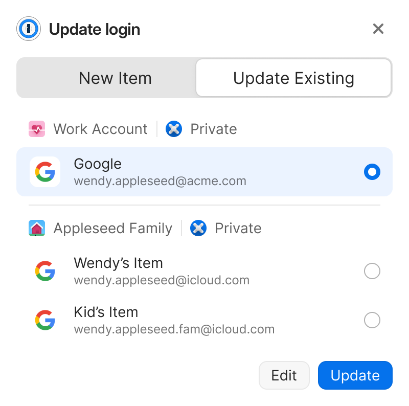
Supporting users when 1Password is locked
Autosaving requires 1Password to be unlocked, but sign-in can begin before that happens. When we detect a login or account-creation attempt while locked, we prompt the user to unlock so we can securely save or surface credentials.
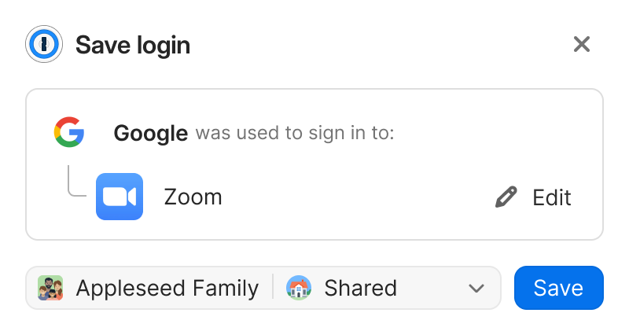
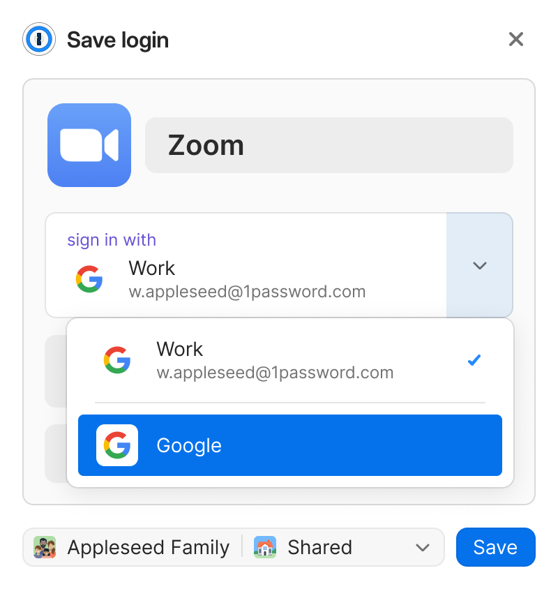
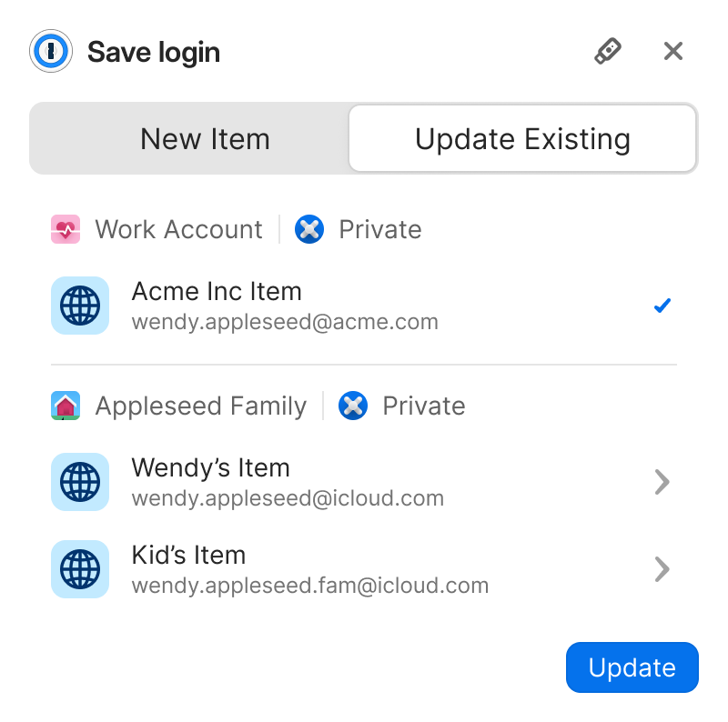
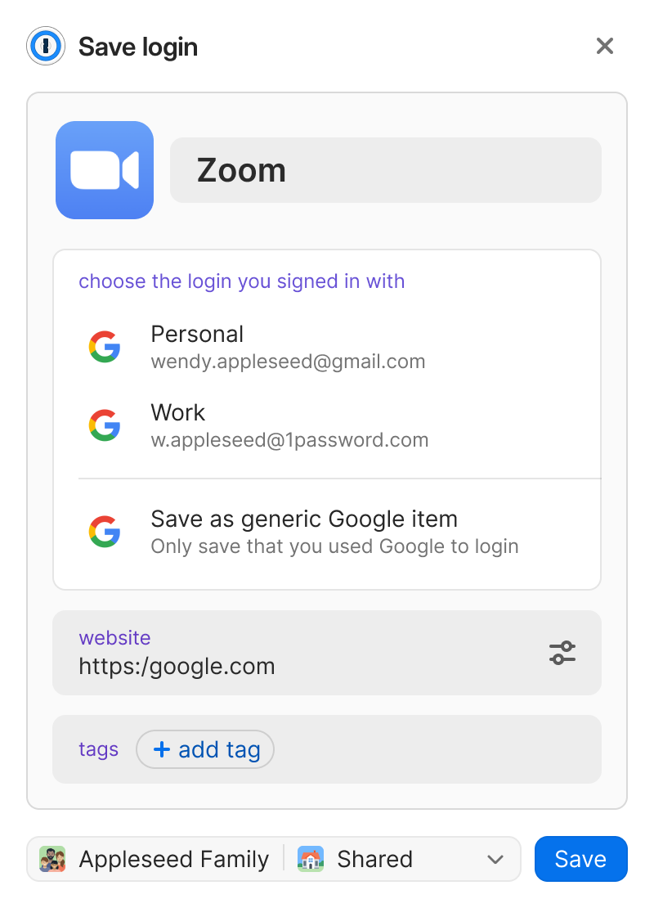
Onboarding users to Auto Save
A contextual "What's New" screen explained the new saving behavior at the right moment, reducing confusion, supporting adoption, and establishing a repeatable pattern for future system-level changes.
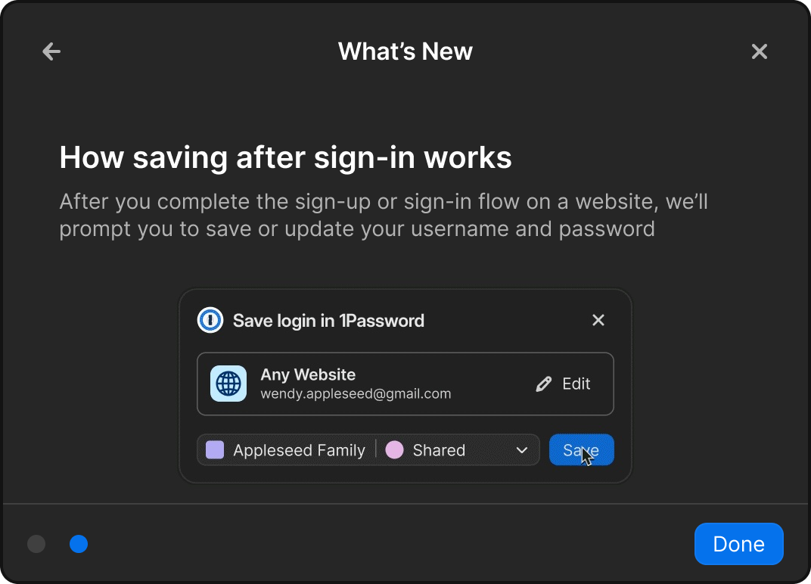
1Password's first in-page communication
This was our first time delivering information directly within the context of a web page, it had to feel seamless and integrated rather than layered on top.
- What do users expect when presented with information?
- Do these actions disrupt their flow?
- Do users see & recognize the 1Password actions?
- All users saw and understood the notification's context
- It did not disrupt their workflow, users responded positively to the single-click action
Filling Credentials
Nine products, four insights
We evaluated nine competing products against our goals, then mapped the issues customers reported most.
- Speed is the primary priority across all products
- Education within the inline menu is underserved
- Inline menus can expose additional item types
- Fill frequency can conflict with discoverability
- The inline menu feels intrusive
- Performance degrades with multiple managers installed
- Behavior is inconsistent across browsers
- Empty states fail to provide useful guidance
Meeting users where they are
Clearly communicate state so it's always obvious how to fill. By removing ambiguity and reducing friction, the experience stays easy, predictable, and reliable.
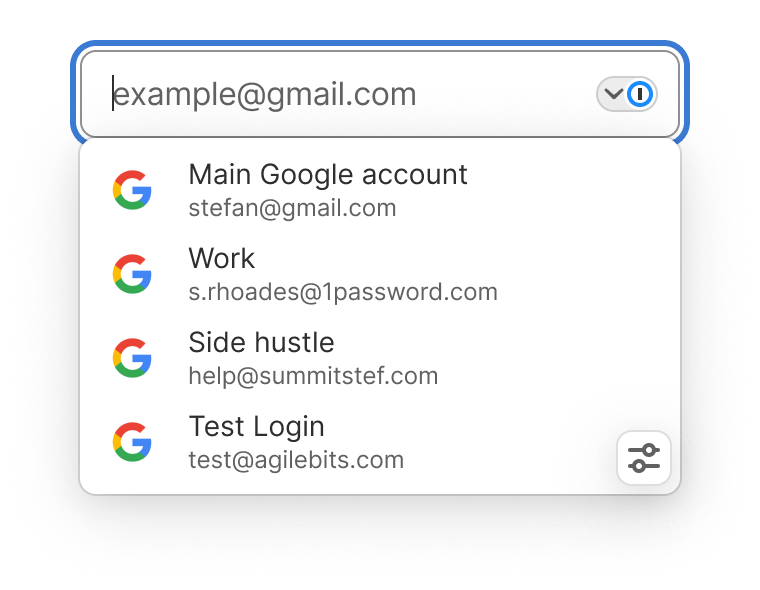
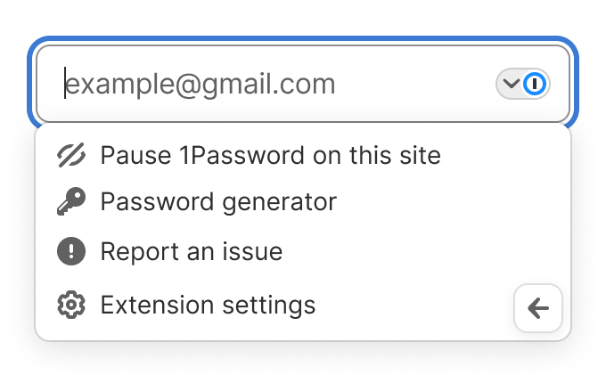
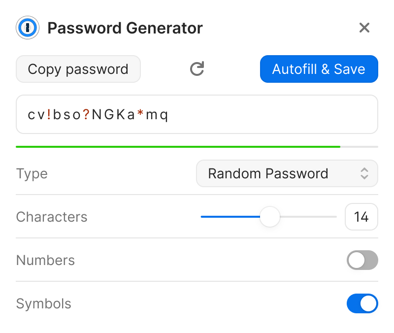
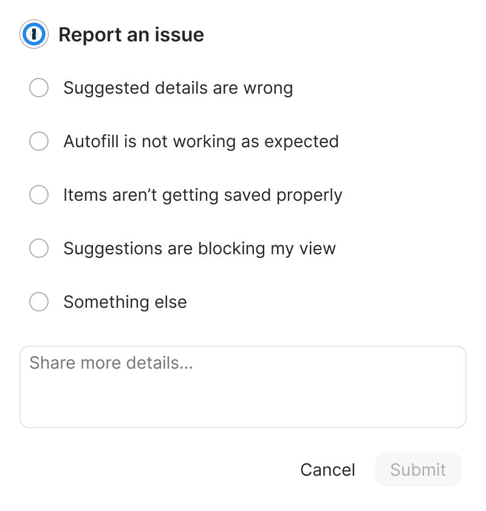
Field logo with a chevron
A chevron indicates whether the menu is open or closed and gives users direct control to toggle it, reducing obstruction of the page and making state immediately clear.

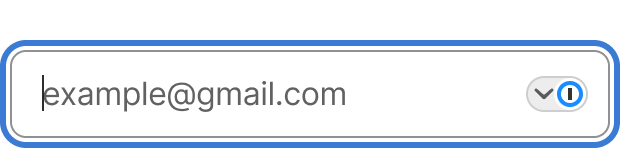
Stateful field control
The chevron area communicates when the menu is locked, guiding users to unlock first so it's clear what's required before the menu can be used.
Empty state improvements
The old empty state resembled the normal state, which users found unhelpful. We made it visually distinct and intentional, clearly signaling nothing is available without unnecessary disruption.
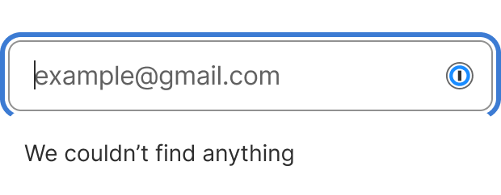
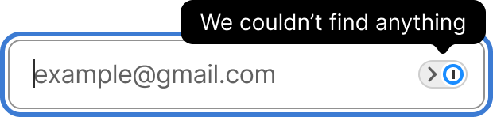
Pausing & restoring inline fill
- Can users pause filling on a specific site?
- Can they easily restore filling?
- How discoverable is the control?
- All participants discovered the inline options menu
- Users had different reasons for pausing
- All could restore the menu via the extension toolbar